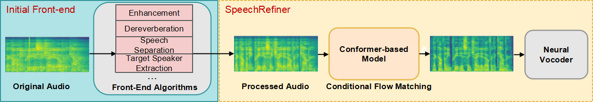

SpeechRefiner: Towards Perceptual Quality Refinement for Front-End Algorithms
Abstract:
Speech pre-processing, such as denoising, de-reverberation, and speech separation, are widely adopted as an enabling technology or a processing front-end for downstream tasks. However, the processing can be insufficient, leaving residual noises or introducing new artifacts. These issues are often not reflected in terms of metrics such as SI-SNRi, but are perceived prominently by human listeners. In this work, we propose SpeechRefiner, a post-processor that leverages Conditional Flow Matching (CFM) to enhance speech perceptual quality. SpeechRefiner can be integrated with different front-end algorithms. We first compare our method with several recently proposed task-specific refinement baselines. We then validate its effectiveness on an internal processing pipeline that incorporates multiple front-end algorithms. Experimental results demonstrate that SpeechRefiner exhibits strong generalization ability across diverse impairment sources, significantly improving speech perceptual quality.

Comparison on various speech front-end algorithms:
This section presents samples from different systems across various speech front-end algorithms. Specifically, "SpeechRefiner (Specific)", corresponding to Table 2 of the paper, aims to evaluate SpeechRefiner against state-of-the-art refiners designed for specific front-end tasks. "SpeechRefiner (General)", corresponding to Table 3, is trained on the internal dataset to further validate the effectiveness of the proposed approach.
Enhancement & Dereverberation: Internal
Front-end algorithm
Audio No.1
Audio No.2
Audio No.3
Audio No.4
Distorted Speech
SpeechRefiner(General)
Enhancement: CDiffuSE[1]
Front-end algorithm
Audio No.5
Audio No.6
Audio No.7
Audio N0.8
Distorted Speech
VoiceFixer[2]
Diffiner+[3]
SpeechRefiner(Specific)
SpeechRefiner(General)
Dereverberation: SGMSE+[4]
Front-end algorithm
Audio No.9
Audio No.10
Audio No.11
Audio N0.12
Distorted Speech
VoiceFixer[2]
Diffiner+[3]
StoRM[5]
SpeechRefiner(Specific)
SpeechRefiner(General)
Separation: Sepformer[6]
Front-end algorithm
Audio No.13
Audio No.14
Audio No.15
Audio N0.16
Distorted Speech
VoiceFixer[2]
Fast-Geco[7]
SpeechRefiner(Specific)
SpeechRefiner(General)
Audio-TSE: Spex+[8]
Front-end algorithm
Audio No.17
Audio No.18
Audio No.19
Audio No.20
Distorted Speech
SpeechRefiner(General)
AV-TSE: MuSE[9]
Front-end algorithm
Audio No.21
Audio No.22
Audio No.23
Audio No.24
Distorted Speech
SpeechRefiner(General)
References:
[1] Y.-J. Lu, Z.-Q. Wang, S. Watanabe, A. Richard, C. Yu, and
Y. Tsao, “Conditional diffusion probabilistic model for speech
enhancement,” in ICASSP 2022-2022 IEEE International Conference on Acoustics, Speech and Signal Processing (ICASSP).
IEEE, 2022, pp. 7402–7406.
[2] H. Liu, Q. Kong, Q. Tian, Y. Zhao, D. Wang, C. Huang, and Y. Wang,
“Voicefixer: Toward general speech restoration with neural vocoder,”
arXiv preprint arXiv:2109.13731, 2021.
[3] R. Sawata, N. Murata, Y. Takida, T. Uesaka, T. Shibuya,
S. Takahashi, and Y. Mitsufuji, “Diffiner: A versatile diffusion-
based generative refiner for speech enhancement,” arXiv preprint
arXiv:2210.17287, 2022.
[4] J. Richter, S. Welker, J.-M. Lemercier, B. Lay, and T. Gerkmann,
“Speech enhancement and dereverberation with diffusion-based generative models,” IEEE/ACM Transactions on Audio, Speech, and Language
Processing, vol. 31, pp. 2351–2364, 2023.
[5] J.-M. Lemercier, J. Richter, S. Welker, and T. Gerkmann, “Storm:
A diffusion-based stochastic regeneration model for speech enhancement and dereverberation,” IEEE/ACM Transactions on Audio, Speech, and Language Processing, 2023.
[6] C. Subakan, M. Ravanelli, S. Cornell, M. Bronzi, and J. Zhong,
“Attention is all you need in speech separation,” in ICASSP 2021-
2021 IEEE International Conference on Acoustics, Speech and
Signal Processing (ICASSP). IEEE, 2021, pp. 21–25.
[7] H. Wang, J. Villalba, L. Moro-Velazquez, J. Hai, T. Thebaud, and
N. Dehak, “Noise-robust speech separation with fast generative
correction,” arXiv preprint arXiv:2406.07461, 2024.
[8] M. Ge, C. Xu, L. Wang, E. S. Chng, J. Dang, and H. Li, “Spex+:
A complete time domain speaker extraction network,” arXiv preprint
arXiv:2005.04686, 2020.
[9] Z. Pan, R. Tao, C. Xu, and H. Li, “Muse: Multi-modal target speaker
extraction with visual cues,” in ICASSP 2021-2021 IEEE International
Conference on Acoustics, Speech and Signal Processing (ICASSP).
IEEE, 2021, pp. 6678–6682.